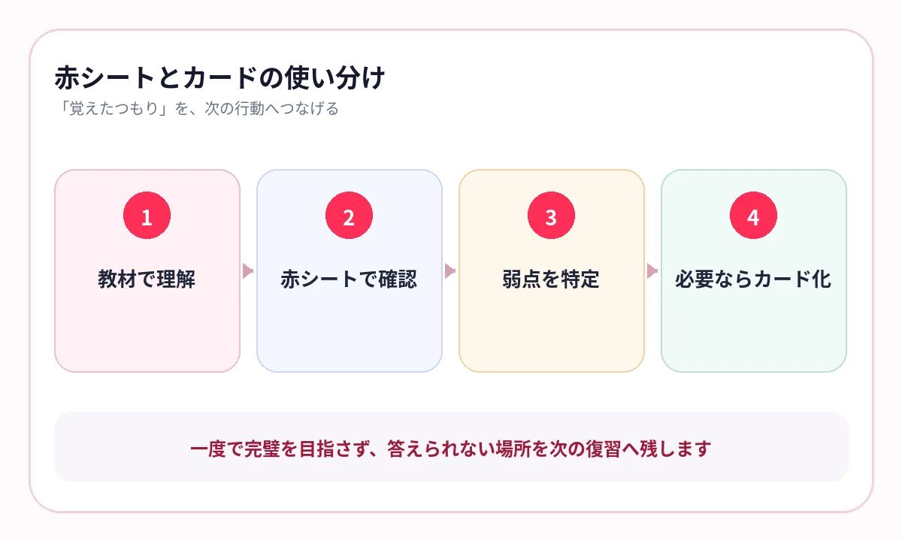

赤シートと暗記カード、結局どちらを使えばよいか迷っていませんか？
どちらも、答えを見ないで思い出すための方法です。違うのは、覚える情報をどの形で残すかです。
文章、図、表、年表の中で覚えたいなら赤シート。問いと答えを短く切り出し、順番を混ぜたいなら暗記カード。教材と目的で使い分けます。
赤シートが向いている場面
赤シートは、教材のページをそのまま使い、重要語句だけを隠します。前後の文章、図、表、位置関係が残ることが強みです。
- 理科の人体・植物・天体の図
- 社会の年表・制度図・地理資料
- 資格テキストの比較表・条文・制度説明
- 授業プリントの空欄・太字・先生の書き込み
「このページの中で答えたい」なら、赤シートが向いています。
暗記カードが向いている場面
暗記カードは、表に問い、裏に答えを置き、情報を短く切り出します。順番を混ぜ、余計な手掛かりを減らせることが強みです。
- 英単語と意味
- 人物名と出来事
- 略語と正式名称
- 制度名と短い定義
- 数式と用途
「一つの問いを、どこでも同じ形で答えたい」なら、暗記カードが向いています。
{kind=link}

7つの軸で比較する
| 比較軸 | 赤シート | 暗記カード |
|---|---|---|
| 作成の手間 | 既存教材を使いやすい | 問いと答えの切り出しが必要 |
| 文脈 | 文章・ページ全体が残る | 必要な情報だけに絞れる |
| 図・表 | 位置関係と一緒に覚えやすい | 画像カードを作れば対応可能 |
| ランダム出題 | 紙では難しい | 得意 |
| 手掛かり | 周辺情報が多い | 少なくできる |
| 見直し | 元の解説へ戻りやすい | 関連説明が切れやすい |
| 向く段階 | 理解後のページ復習 | 知識の取り出し・最終確認 |
横にスワイプして画像を確認できます


迷ったら、赤シートからカードへ
教材を理解
教科書・プリント・参考書で内容を読みます。
赤シートで確認
ページの文脈を残し、重要語句を答えます。
迷う知識を特定
何度も間違える語句や数字を見つけます。
カードへ切り出す
最後まで混ざる知識だけ、一問一答へ絞ります。
最初からすべてカード化すると、作成だけで時間がかかります。まず既存教材を使い、必要な知識だけを切り出します。
デジタルなら、両方の強みを近づけられる
AI暗記シートは、教材のレイアウトを残した赤シート型の学習です。一方で、複数教材の順番・ランダム・弱点優先の出題ができるため、暗記カードのように順序を崩して復習できます。
元の教材を作り直す手間を抑えながら、間違えた教材へ戻る仕組みを作れます。
よくある質問
赤シートと暗記カードを両方使ってもよいですか？
はい。まず赤シートで教材全体を確認し、最後まで混同する知識だけを暗記カードへ切り出す方法が効率的です。
図や表を覚えるならどちらがよいですか？
元の位置関係を残せる赤シートが向いています。一問一答に分解したい場合は画像カードも使えます。
作成時間を減らしたい場合は？
すでに使っている教材をそのまま活用できる赤シート型から始め、必要な知識だけカード化します。
参考情報
試験範囲・制度は公式情報、復習方法は学習科学の研究を参照しています。
教材はそのまま、出題順は自由に
赤シートの文脈と、弱点出題を一つに
写真やPDFのレイアウトを残して語句を隠し、順番・ランダム・弱点優先で出題。作り直す時間を減らせます。
iPhone・iPad対応／3枚まで無料保存／継続利用は800円の買い切り